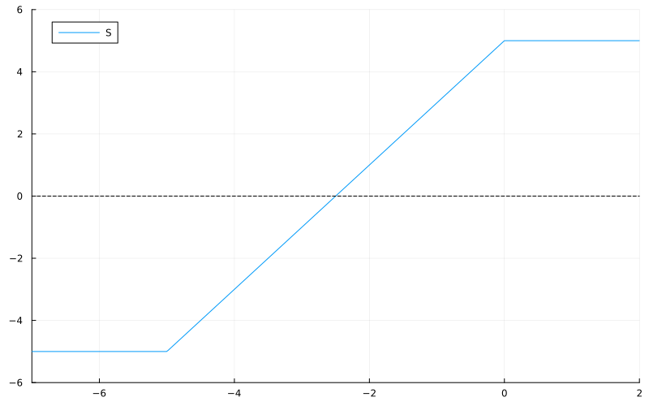
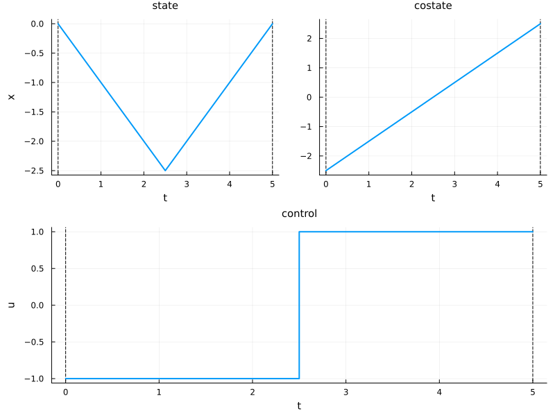
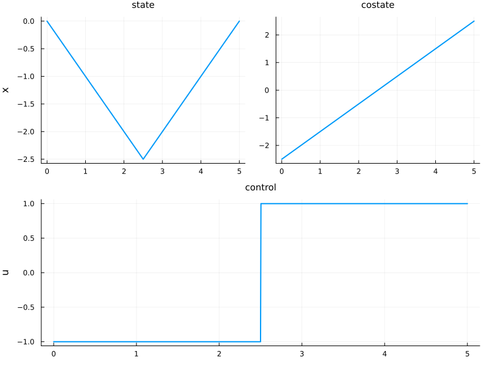

Indirect method
The goal is to solve this toy problem using the indirect method. Particular attention is given to the computation of the Jacobian of the well-known shooting function, which is not straightforward due to the non-differentiability of the flow with respect to the initial costate.
Let us start by importing the packages
using OptimalControl # for optimal control
using Plots # for plotting
using ForwardDiff # for automatic differentiation
using DifferentialEquations # for solving differential equations
using MINPACK # for solving nonlinear systemsAnd define the studied optimal control problem
t0 = 0; x0 = 0; tf = 5; xf = 0 # Initial and final time and state
# Problem definition
@def ocp begin
t ∈ [ t0, tf ], time
x ∈ R, state
u ∈ R, control
x(t0) == x0
x(tf) == xf
ẋ(t) == u(t)
∫( x(t) ) → min
endAbstract definition:
t ∈ [t0, tf], time
x ∈ R, state
u ∈ R, control
x(t0) == x0
x(tf) == xf
ẋ(t) == u(t)
∫(x(t)) → min
The (autonomous) optimal control problem is of the form:
minimize J(x, u) = ∫ f⁰(x(t), u(t)) dt, over [0, 5]
subject to
ẋ(t) = f(x(t), u(t)), t in [0, 5] a.e.,
ϕ₋ ≤ ϕ(x(0), x(5)) ≤ ϕ₊,
where x(t) ∈ R and u(t) ∈ R.
Indirect method
The pseudo-Hamiltonian associated with the studied optimal control problem is defined by
\[ h(x,p,p^0,u) = p^0 x + p u.\]
For the sake of simplicity, we assume that the BC-extremals associated with the solution of the studied problem are normal, and so we fix $p^0 = -1$. According to the Pontryagin maximum principle, the maximizing control is given by $u(x,p) \to \mathrm{sign}(p)$. This function is non-differentiable and may lead to numerical issues.
Thanks to the control-toolbox, the flow $\varphi$ of the (true) Hamiltonian
\[ H(x,p) = h(x,p,-1, u(x,p)) = p^0 x + \lvert p \rvert \]
is given by the function Flow. The shooting function $S \colon \mathbb{R} \to \mathbb{R}$ is defined by
\[ S(p_0) = \pi \big( \varphi(t_0, x_0, p_0, t_f) \big) - x_f\]
where $\pi (x,p) = x$ is the classical $x$-space projection. The shooting function $S$ is plotted below.
ϕ = Flow(ocp, (x,p) -> sign(p)) # Flow with maximizing control
π((x,p)) = x; # Projection on state space
S(p0) = π( ϕ(t0, x0, p0, tf) ) - xf; # Shooting function
nle = p0 -> [S(p0[1])] # Intermediate function
# Plot
plt = plot(xlim = (-7, 2), ylim = (-6, 6), size=(800, 500))
plot!(plt, S, label = "S")
plot!(plt, [-7,2], [0,0], c = :black, ls = :dash, label = nothing)
Finite difference method
The main goal now is to find the zero of $S$. For this purpose, we use the numerical solver hybrd1 given in the package MINPACK.jl. If we do not provide the Jacobian $J_S$ of $S$ to the solver, the finite difference method is used to approximate it.
ξ = [-1.0] # Initial guess
S!(s, ξ) = (s[:] .= S(ξ[1]); nothing) # Intermediate function
p0_sol = fsolve(S!, ξ, show_trace = true) # SolveResults of Nonlinear Solver Algorithm
* Algorithm: Modified Powell
* Starting Point: [-1.0]
* Zero: [-2.500000004924035]
* Inf-norm of residuals: 0.000000
* Convergence: true
* Message: algorithm estimates that the relative error between x and the solution is at most tol
* Total time: 0.234686 seconds
* Function Calls: 5
* Jacobian Calls (df/dx): 1sol = ϕ((t0, tf), x0, p0_sol.x) # Get the optimal trajectory
plot(sol, size = (800,600)) # PlotAutomatic differentiation (wrong way)
Now, we want to provide $J_S$ to the solver, thanks to the ForwardDiff.jl package. This Jacobian is computed with the variational equation and leads to a false result in our case. The reason for this issue is explained below.
Details
Denoting $z = (x,p)$, we have
\[ \varphi(t_0, z_0, t_f) = z_0 + \int_{t_0}^{t_f} \vec H\big(\varphi(t_0, z_0, t)\big) \,\mathrm dt. \]
If we assume that $z_0 \to \varphi(t_0, z_0, t_f)$ is differentiable, we have
\[ \frac{\partial \varphi}{\partial z_0}(t_0, z_0, t_f)\cdot \delta z_0 = \delta z_0 + \int_{t_0}^{t_f} \vec H'\big(\varphi(t_0, z_0, t)\big)\cdot \left( \frac{\partial \varphi}{\partial z_0}(t_0, z_0, t) \cdot \delta z_0 \right) \,\mathrm dt, \]
and so, $z_0 \to \frac{\partial \varphi}{\partial z_0}(t_0, z_0, t_f)\cdot \delta z_0$ is solution of the variational equations
\[ \frac{\partial \delta z}{\partial t}(t) = \vec H'\big(\varphi(t_0, z_0, t_f)\big) \cdot \delta z(t), \qquad \delta z(t_0) = \delta z_0.\]
In the studied optimal control problem, we have
\[ \vec H(x,p) = (\mathrm{sign}(p), -1) \]
and so, we have $\vec H'(z) = 0_2$ almost everywhere, which implies
\[ \frac{\partial \varphi}{\partial z_0}(t_0, z_0, t_f) \cdot \delta z_0 = \mathrm{exp}\big((t_f-t_0) 0_2 \big)\cdot \delta z_0 = \delta z_0.\]
The Jacobian of the shooting function is then given by
\[ S'(p_0) = \pi \left( \frac{\partial \varphi}{\partial p_0}(t_0, x_0, p_0, t_f) \right) = \pi \left( \frac{\partial \varphi}{\partial z_0}(t_0, z_0, t_f) \cdot (0,1) \right) = \pi(0,1) = 0. \]
ξ = [-1.0] # Initial guess
JS(ξ) = ForwardDiff.jacobian(p -> [S(p[1])], ξ) # Compute Jacobian by forward differentiation
println("ξ = ", ξ[1])
println("JS(ξ) : ", JS(ξ)[1])ξ = -1.0
JS(ξ) : 0.0However, the solver hybrd1 uses rank 1 approximations to update the Jacobian instead of computing it at each iteration, which implies that it still converges to the solution even if the given Jacobian is completely false.
JS!(js, ξ) = (js[:] .= JS(ξ); nothing) # Intermediate function
p0_sol = fsolve(S!, JS!, ξ, show_trace = true) # SolveResults of Nonlinear Solver Algorithm
* Algorithm: Modified Powell (User Jac, Expert)
* Starting Point: [-1.0]
* Zero: [-2.499999992669224]
* Inf-norm of residuals: 0.000000
* Convergence: true
* Message: algorithm estimates that the relative error between x and the solution is at most tol
* Total time: 0.123161 seconds
* Function Calls: 12
* Jacobian Calls (df/dx): 2sol = ϕ((t0, tf), x0, p0_sol.x) # Get the optimal trajectory
plt = plot(sol, size = (800, 600)) # Plot
Automatic differentiation (good way)
The goal is to provide the true Jacobian of $S$ by using the ForwardDiff package, and so we need to indicate to the solver that the dynamics of the system change when $p = 0$.
To understand why we need to give this information to the solver, see the following details.
Details
The problem is that the Hamiltonian $H$ is not differentiable everywhere due to the maximizing control. This control is bang-bang ($u = 1$ and $u = -1$). Let us now construct the two smooth Hamiltonians associated with these two controls
\[ H^+(x,p) = h(x,p,-1,1) = -x + p \qquad \text{and} \qquad H^-(x,p) = h(x,p,-1,-1) = -x - p. \]
Their associated vector fields are given by
\[ \vec H^+(x,p) = (1,1) \qquad \text{and} \qquad \vec H^-(x,p) = (-1, 1), \]
and their associated flows correspond to
\[ \varphi^+(t_0, z_0, t_f) = z_0 + \left( \begin{array}{c} 1 \\ 1 \end{array} \right) (t_f -t_0) \qquad \text{and} \qquad \varphi^-(t_0, z_0, t_f) = z_0 + \left( \begin{array}{c} -1 \\ \phantom{-} 1 \end{array} \right) (t_f -t_0).\]
If we assume that the optimal structure of the problem is negative then positive bangs, then the associated flow is defined by
\[ \varphi(t_0, z_0, t_f) = \varphi^+ \big( t_1(z_0), \varphi^-\big(t_0, z_0, t_1(z_0)\big), t_f \big),\]
with the following condition
\[ \pi_p \big( \varphi^-(t_0, z_0, t_1(z_0)) \big) = 0,\]
where $\pi_p(x,p) = p$ is the classical $p$-space projection. By developing this last condition, an explicit form of the function $t_1(\cdot)$ is given by
\[ t_1(x_0, p_0) = t_0 - p_0.\]
Finally, we have
\[ \begin{align*} \frac{\partial \varphi}{\partial z_0} &= \frac{\partial \varphi^+}{\partial t_0} \frac{\partial t_1}{\partial z_0} + \frac{\varphi^+}{\partial z_0} \left( \frac{\partial \varphi^-}{\partial z_0} + \frac{\partial \varphi^-}{\partial t_f} \frac{\partial t_1}{\partial z_0} \right) \\ &= \left( \begin{array}{c} -1 \\ -1 \end{array} \right) \left( \begin{array}{cc}0 & -1 \end{array} \right) + \left( \begin{array}{cc} 1 & 0 \\ 0 & 1 \end{array} \right) \left[ \left( \begin{array}{cc} 1 & 0 \\ 0 & 1 \end{array} \right) + \left( \begin{array}{c} -1 \\ \phantom - 1 \end{array} \right) \left( \begin{array}{cc}0 & -1 \end{array} \right) \right] \\ &= \left( \begin{array}{cc} 0 & 1 \\ 0 & 1 \end{array} \right) + \left( \begin{array}{cc} 1 & 0 \\ 0 & 1 \end{array} \right) + \left( \begin{array}{cc} 0 & \phantom -1 \\ 0 & -1 \end{array} \right) \\ &= \left( \begin{array}{cc} 1 & 2 \\ 0 & 1 \end{array} \right) \end{align*}\]
and so, we have that
\[ S'(p_0) = \pi \left( \frac{\partial \varphi}{\partial p_0}(t_0, x_0, p_0, t_f) \right) = \pi \left( \frac{\partial \varphi}{\partial z_0}(t_0, z_0, t_f) \cdot (0,1) \right) = \pi(2,1) = 2.\]
To provide this change of dynamics to the solver, we need to use a callback during the integration that will execute the function affect! when condition equals zero.
For us, the condition is given by $(x,p) \to p$. For the affect! function, we use a global parameter $\alpha$. This parameter will be set to $\pm 1$ at the beginning of the integration and its sign will change with the affect! function.
Thanks to the OptimalControl.jl package, the created callback can be easily passed to the integrator through the Flow function. This is done in the following collapsed block.
Details
# Parameter: ̇p(t) = α with α = ±1
global α
# Event when condition(x,p) == 0
function condition(z, t, integrator)
x,p = z
return p
end
# Action when condition == 0
function affect!(integrator)
global α = -α
nothing
end
cb = ContinuousCallback(condition, affect!) # Callback
φ_ = Flow(ocp, (x,p) -> α, callback = cb) # Intermediate flow
# Flow for the solver
function φ(t0, x0, p0, tf; kwargs...)
global α = sign(p0)
return φ_(t0, x0, p0, tf; kwargs...)
end
# Flow for plot
function φ((t0, tf), x0, p0; kwargs...)
global α = sign(p0)
return φ_((t0, tf), x0, p0; kwargs...)
end
# Plot solution
function plot_sol(sol; size = (800, 600))
t = sol.time_grid.value
x = state(sol)
p = costate(sol)
u = sign ∘ p
plt_x = plot(t, x, label = nothing, ylabel = "x", title = "state", titlefontsize = 10, lw = 2)
plt_p = plot(t, p, label = nothing, title = "costate", titlefontsize = 10, lw = 2)
plt_u = plot(t, u, label = nothing, ylabel = "u", title = "control", titlefontsize = 10, lw = 2)
plt_xp = plot(plt_x, plt_p, layout=(1, 2))
return plot(plt_xp, plt_u, layout = (2, 1), size = size)
endShoot(p0) = π( φ(t0, x0, p0, tf) ) - xf # Shooting function
ξ = [-1.0] # Initial guess
JShoot(ξ) = ForwardDiff.jacobian(p -> [Shoot(p[1])], ξ) # Compute Jacobian by forward differentiation
println("ξ = ", ξ[1])
println("JS(ξ) : ", JShoot(ξ)[1])ξ = -1.0
JS(ξ) : 1.9999999412397231Shoot!(shoot, ξ) = (shoot[:] .= Shoot(ξ[1]); nothing) # Intermediate function
JShoot!(jshoot, ξ) = (jshoot[:] .= JShoot(ξ); nothing) # Intermediate function
p0_sol = fsolve(Shoot!, JShoot!, ξ, show_trace = true) # SolveResults of Nonlinear Solver Algorithm
* Algorithm: Modified Powell (User Jac, Expert)
* Starting Point: [-1.0]
* Zero: [-2.4999999999999987]
* Inf-norm of residuals: 0.000000
* Convergence: true
* Message: algorithm estimates that the relative error between x and the solution is at most tol
* Total time: 3.064940 seconds
* Function Calls: 5
* Jacobian Calls (df/dx): 1sol = φ((t0, tf), x0, p0_sol.x[1], saveat=range(t0, tf, 500)) # Get optimal trajectory
plot_sol(sol)